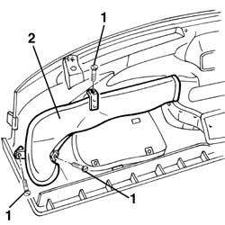

5010B24 under-facia air ducts r r
- Path
- Procedures > 50 AUXILIARY UNITS > 5010 CLIMATE CONTROL - MISCELLANEOUS > 5010B heating/ventilation air pipes and ducts > 5010B24 under-facia air ducts r r
- Kind
- repair procedure (removal / refitting; the operation number is the code)
- Applies to
- all engines; all production periods
- Interactive page
- https://sloeber94.github.io/elrnDB-a156/en/#/3238249
Applies to: all engines; all production periods
 Removing
Removing
 Refitting
Refitting5010C12 Windscreen demising VENT - R.R.
7040A44 facia lh side cover - r r
7040G24 switch for facia compartment light - r+r
7040G20 facia compartment light bulb holder - r+r
7040A09 passenger air bag compartment cover - r r
7040A65 passenger compartment box lock , one , r r (right and left site)
5040D22 control (one) of air conditioner control support - arrange
2125C24 gear lever knob - r + r
7040A60 under facia trim - r+r
3380A44 handbrake/linkage protection - r+r
7040L28 tunnel switch panel - r r
5560C51 combined analogue control panel - r+r or replace
5540C18 headlamp/light cluster alignment correction motor switch - r+r
4110A11 steering wheel - r+r for replacement or check for versions with air bag
7040A26 steering column trim - r+r
5580C12 clock spring for air bag module on steering wheel r r
5550A12 complete stalk unit - r+r for versions with air bag
5580C22 AIR BAG MODULE - Passenger side - R.R.
7040H30 front pillar trim - r r (right and left site)
7040A10 instrument facia trim - r+r
1. Loosen the screws
2. Supplant the conduit

Applies to: all engines; all production periods
Refitting
RemovingVerify that the conduit has no damages
Install the conduit and fix it with the screws
7040A10 instrument facia trim - r+r
7040H30 front pillar trim - r r (right and left site)
5580C22 AIR BAG MODULE - Passenger side - R.R.
5550A12 complete stalk unit - r+r for versions with air bag
5580C12 clock spring for air bag module on steering wheel r r
7040A26 steering column trim - r+r
4110A11 steering wheel - r+r for replacement or check for versions with air bag
5540C18 headlamp/light cluster alignment correction motor switch - r+r
5560C51 combined analogue control panel - r+r or replace
7040L28 tunnel switch panel - r r
3380A44 handbrake/linkage protection - r+r
7040A60 under facia trim - r+r
2125C24 gear lever knob - r + r
5040D22 control (one) of air conditioner control support - arrange
7040A65 passenger compartment box lock , one , r r (right and left site)
7040A09 passenger air bag compartment cover - r r
7040G20 facia compartment light bulb holder - r+r
7040G24 switch for facia compartment light - r+r
7040A44 facia lh side cover - r r
5010C12 Windscreen demising VENT - R.R.
verify the functionality and the regular aseembly of the involved particulars
Topics linked from this page (29)
- 2125C24 gear lever knob - r + r
- 3380A44 handbrake/linkage protection - r+r
- 4110A11 steering wheel - r+r for replacement or check for versions with air bag
- 5010C12 Windscreen demising VENT - R.R.
- 5040D22 control (one) of air conditioner control support - arrange
- 5540C18 headlamp/light cluster alignment correction motor switch - r+r
- 5550A12 complete stalk unit - r+r for versions with air bag
- 5560b02 kilometre/mileometer - r r
- 5560B03 rev counter - r r
- 5560C51 combined analogue control panel - r+r or replace
- 5560C60 anomaly display - r+r
- 5570T80 car radio unit - r+r
- 5580C12 clock spring for air bag module on steering wheel r r
- 5580C18 air bag module - r+r
- 5580C22 AIR BAG MODULE - Passenger side - R.R.
- 7040A09 passenger air bag compartment cover - r r
- 7040A10 instrument facia trim - r+r
- 7040A26 steering column trim - r+r
- 7040A31 flap assembly - r r
- 7040A37 fuse box cover - r r
- 7040A44 facia lh side cover - r r
- 7040A60 under facia trim - r+r
- 7040A65 passenger compartment box lock , one , r r
- 7040G20 facia compartment light bulb holder - r+r
- 7040G24 switch for facia compartment light - r+r
- 7040H30 front pillar trim - r r
- 7040L20 tunnel trim - r r
- 7040L28 tunnel switch panel - r r
- 7065C42 ashtray (one) r+r